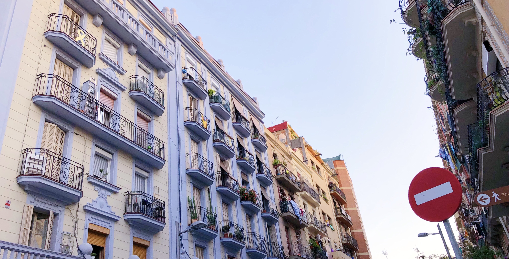

2016
2017
2018
2019
Barcelona
I visited Barcelona for 10 days in the summer of 2019. This was immediately after my summer internship had ended so I was more than ready for a vacation. I took this trip with my college friend and sophomore year roommate, Julie Deng.
We started off our trip with a dinner in Poble Sec. This place is INCREDIBLY cheap! Tapas were 1 euro per dish, tacos were 1 euro per taco, and cocktails were 6-8 euros each! The streets are also quite lively, as all tapas bars had outdoor seating that most people prefer.
Our second day started off at Mercado de La Boqueria. This is the city's most famous outdoor food market. We booked a cooking class to cook paella, and this market was where we bought the ingredients. The cooking class itself was incredibly fun. We were able to meet about 10 other people from all over the world and all come together to cook one gigantic dish of paella (traditional Spanish rice dish). There were lots and lots of wine, which made the bonding and talking among everyone that much easier. While admittedly, I barely did anything to contribute to the cooking, as everyone all contributes to a singular dish, it was still a really fun experience that I would recommend to everyone. Plus, we got an amazing meal out of it!


After our cooking class, we walked about the market a bit more (it's pretty big!) and considered buying their fruit drinks (we ended up not buying any). We then walked around Las Ramblas, which was right next to the market. Las Ramblas is always very lively, with street performers, many shops, cool eateries, and just overall vibrant culture with so many people walking around. We bought all of our souvenirs here (pro tip: always bargain at souvenir shops)
The rest of the day pretty much consisted of walking around the city, watching street performances, and trying out new food. At night, we hit up a few bars around the Gothic Quarter.


Our 3rd day was packed. We went to La Sagrada Familia in the morning, Park Guell in the afternoon, and went to a Flamenco show at night. La Sagrada Familia is probably the most famous basilica in Barcelona. Designed by Gaudi, this magnificent building is still in the process of being completed. The one thing we were disappointed in was the tower. You can buy tickets to 2 different towers of the Basilica, the Nativity and Passion Facade towers. We read online that Nativity tower is the best and is a must-buy; however, when we got up there, you can barely see anything. The view is essentially one small bridge at the top of the tower, but with all sides protected by a mesh net so you can't really get great pictures. Also, looking at the basilica from up there, we mostly just saw construction. Regardless, La Sagrada Familia was beautiful and literally looks like a castle.


Park Guell was also stunning. While there are many beautiful and insta-worthy spots on the free part of the park, the paid, protected part is a definite must. That's where the famous mosaic benches are located. We spent a good hour just at these benches waiting for a spot to open up to take pictures. I would recommend coming to the park 2 hours before your ticketed entry time, to walk around and take in the free parts of the park. Also, try to book your ticketed entry time closer to sunset. It is SO stunning after the sun sets and the sky is that perfect palette of warm pastels. Plus, I personally love the lighting right after the sun sets, when it is not dark yet but the sun can't cast weird shadows on your face or turn your face yellow altogether.


At night, we went to a flamenco show at Palau de la Musica. All the dancers were so talented, and the show left us in awe. The venue itself was ornate and beautiful, and the show even came with free champagne! Definitely recommend!!
The next day, we visited more of Gaudi's buildings. We started with Casa Mila, followed by Casa Batllo. Both places are guided tours with an audioguide, but the cool thing about Casa Batllo was that you also get this device that shows you what the building used to look like when it was first designed as you hold the device up to certain areas of the house. Technology!!

This night, we decided to treat ourselves to a fancy dinner at Restaurant Informal. The appetizers are SOO
good. I literally still dream about their olive dipping sauce. The restaurant is also next to Chupitos,
a famous shots bar with hundreds of odd and eccentric shot combinations. This place is a must go
for tourists. Fun vibes, great drinks, cheap prices - what more could you ask for? After a few drinks at
Chupitos, we left and went clubbing.
In terms of clubs, Julie and I enjoyed Jamboree and Shoko the best. The vibe inside Pacha was also
really nice, but this played just played House music when we went, and we're not huge fans of that.
When you go out to clubs in Barcelona, always search up guest list and add yourself for free entry.
I downloaded the Xceed app which made the guest list process really simple. You just put your
email in the app, and freely add yourself on the guest list for any club. Be aware, though, if you want
the free admittance, go at least an hour early to wait in line -- everyone else also ues these guest lists
and the line gets inSANE. We waited 3 hours one night to get into Pacha.
The rest of the trip consisted of either day trips or rest days where we just walked
around the city shopping, exploring, and eating. For our day trips, we spent one day in Girona and one
day in Montserrat.
Girona was beatiful. There are so many nooks and crannies to appreciate, and so much good food. The
streets here were also extremely lively, with street performers, small shops, and puppers! Walking
in these streets felt like walking in some midieval fairytale. Be sure to walk the city walls and snap
pictures at the Eiffel bridge here!


Montserrat was breathtaking. We took the tram up to the visitor center, and walked the rest of the way up (took us 1-2 hours). Pictures honestly don't do this mountain justice. Definitely a must-see if you visit Barcelona.


Overall, the Barcelona trip was amazing. 10 days was a really comfortable length to stay in Barcelona. The city itself is quite small, but there are so many nearby cities and day trips to explore. 10 days in the city also gave us enough time to slow down and explore the different corners of the city; we didn't feel too rushed to hit everything at all!